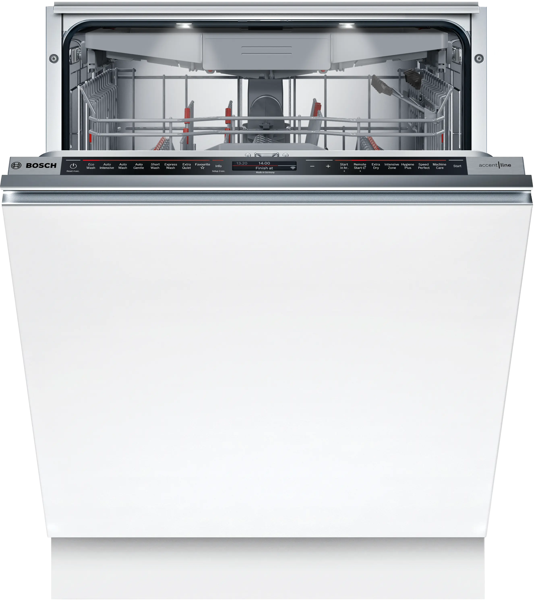

A dishwasher that will not drain, leaks water, leaves dishes dirty or does not heat properly can quickly become a problem. MyFixer provides professional mobile dishwasher repair and servicing for homes, offices and businesses.
Our technicians diagnose the dishwasher, identify the likely cause of the fault and explain the recommended repair. Where practical, repairs can be completed during the visit. We provide mobile dishwasher repair in Centurion, Pretoria, Johannesburg and surrounding areas across Gauteng.
We service many popular dishwasher brands, including Bosch, Defy, Samsung, LG, Whirlpool and Smeg. If a replacement part is required, we will explain what is needed and advise you on the next step before proceeding.
We diagnose dishwashers that leave standing water inside the machine by checking the drain pump, filter, drain hose and other parts of the drainage system.
We investigate water leaks around the door seal, hoses, valves, gaskets and other internal components to identify where the leak is coming from.
We check spray arms, filters, water circulation, water flow and related components when dishes remain dirty, greasy or covered in residue after a cycle.
We diagnose problems involving the power supply, door latch, controls, switches and other components when the dishwasher will not start or complete a cycle.
We diagnose heating faults involving the heating element, thermostat, temperature sensor and related components when water does not reach the required temperature.
We diagnose dishwasher error codes and electrical or mechanical faults that prevent the appliance from operating correctly.
Dishwasher faults can involve several systems, including water inlet, drainage, circulation, heating, electrical controls and door components. Our technicians inspect the appliance to identify the cause of the problem rather than simply replacing parts without diagnosis.
Dishwasher servicing and diagnostics can help identify problems such as restricted water flow, blocked filters, drainage faults, pump issues, heating problems, leaks, unusual noises, error codes and poor cleaning performance.
MyFixer provides mobile dishwasher repair and diagnostics across Gauteng, including Centurion, Pretoria, Johannesburg, Midrand, Sandton, Randburg, Roodepoort and Fourways.
Our technicians travel to homes, offices and businesses where on-site dishwasher repair is practical. The exact service approach depends on the dishwasher, fault and parts or tools required.
MyFixer repairs common dishwasher problems including dishwashers that do not drain, leak water, clean poorly, do not start, do not heat properly, have water-flow or pump problems, display error codes, or have electrical and mechanical faults.
Yes. MyFixer can diagnose dishwashers that are not draining, not cleaning properly or not heating. Possible causes include blocked filters or hoses, drain pumps, circulation pumps, spray arms, heating elements, thermostats, temperature sensors, valves and electrical or control components.
MyFixer services popular dishwasher brands including Bosch, Defy, Samsung, LG, Whirlpool and Smeg, as well as other domestic and commercial dishwasher brands, depending on the machine, fault and availability of suitable replacement parts.
Yes. MyFixer provides mobile dishwasher diagnostics and repair in Centurion, Pretoria, Johannesburg and surrounding Gauteng areas including Midrand, Sandton, Randburg, Roodepoort and Fourways. Technicians can attend homes, offices and businesses where on-site repair is practical.
Tell us what is wrong with your dishwasher and provide the brand and model where available. Our team can help determine the appropriate repair service and next steps.